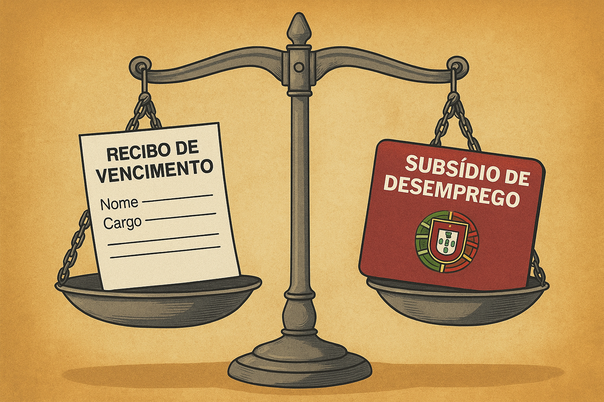

Publicado em 2025-05-14 08:43:47
Ao longo dos anos, os sucessivos governos em Portugal têm cultivado a ideia de que o subsídio de desemprego é uma dádiva, um apoio caritativo que o Estado concede aos “infelizes sem trabalho”. O discurso oficial — subtil mas persistente — constrói uma narrativa de quase culpa ou favor: “Estás a receber do Estado. Sê grato.”
Mas a verdade — essa que nunca entra no boletim de voto — é outra:
O subsídio de desemprego não é uma benesse. É um direito pago pelos próprios trabalhadores.
Dos 34,75% que são descontados todos os meses para a Segurança Social:
Desses valores, 3,5% correspondem especificamente à rubrica do Fundo de Desemprego.
Ou seja: todos os meses os trabalhadores pagam para garantir que, caso fiquem sem trabalho, tenham uma compensação temporária.
O subsídio de desemprego é, portanto, um seguro social — como qualquer outro — e não um gesto de generosidade do Estado.
Ao apresentar o subsídio como uma “ajuda social”, os governos:
Mas a realidade é esta: o Estado gere o dinheiro de quem trabalha. E muitas vezes, mal.
Muitos portugueses sentem vergonha de recorrer ao subsídio de desemprego.
Outros são levados a acreditar que estão a “pesar na máquina”.
E pior: o sistema esconde que há milhares de trabalhadores que contribuem, mas nunca terão acesso ao apoio — ou porque o perderam por dias, ou porque o sistema os empurrou para fora.
O subsídio de desemprego é:
Basta de mistificações.
Basta de propaganda social mascarada de justiça.
Chegou a hora de tratar os cidadãos como adultos conscientes — não como pedintes de um Estado que se alimenta deles.
Por Francisco Gonçalves in Fragmentos de Caos